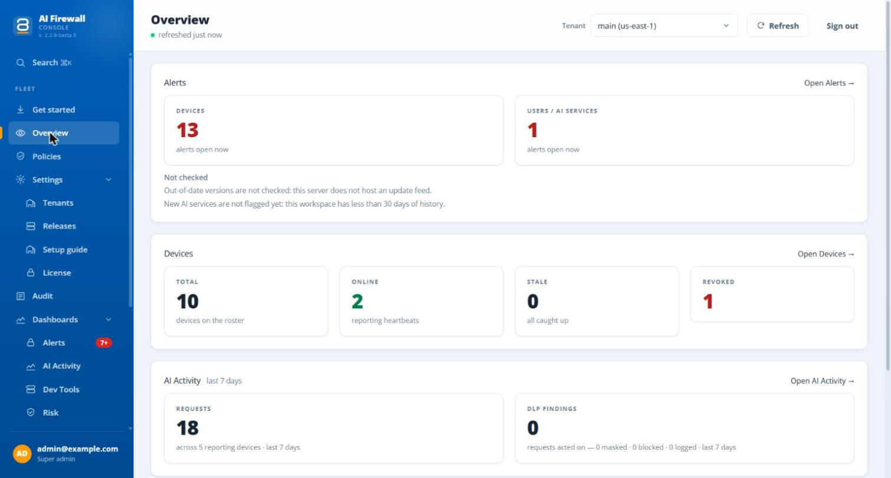
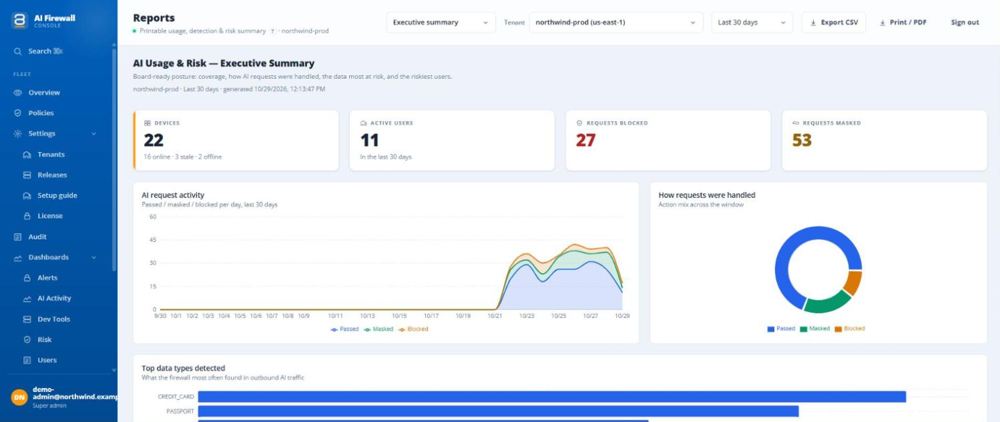

Data protection for companies that use AI
Use AI at work without giving away your company's secrets.
ScienceSoft On-Device AI Firewall is a small program on each work computer. When someone sends a message, a file or a picture to ChatGPT, Claude, Gemini or another AI tool, it finds personal and confidential details and hides them first. The AI still gets the question, without the private part.
Which details are hidden, and what else happens, is set by your own rules. You run the server.

AI is already in your company. So is the risk.
Your people use AI every day to write and work faster. That is good. But a chat window does not warn anyone that a message holds a client's name, a price list or a card number. Once it is sent, you cannot take it back.
What the employee types
Write a polite reply to Anna Kowalski (anna.kowalski@acme-corp.example). Her card 4111 1111 1111 1111 was charged twice for invoice 2041.
What goes to the AI
Write a polite reply to [PERSON] ([EMAIL]). Her card [CARD NUMBER] was charged twice for invoice 2041.
An example with invented data. The AI can still write the reply.
How it works, in three steps.
Someone sends something to an AI tool
A message, a document or a picture, in the browser or in an app.
The program on their computer reads it first
It looks for private details: names, numbers, passwords, confidential documents. This happens on the computer itself.
Your rules decide what happens
The private details are replaced with labels, or the message is stopped. Then the rest goes on to the AI.
You decide what happens when private data is found.
Three settings, shown on the same example. Choose one for the whole company, or different ones for a team or an AI tool.
Record only
The message goes through as it is. You get a record of what was found, so you can see what your people send before you switch protection on. Passwords, keys and the words you list are still hidden.
What the AI receives
Write a polite reply to Anna Kowalski (anna.kowalski@acme-corp.example). Her card 4111 1111 1111 1111 was charged twice for invoice 2041.
The employee notices nothing.
Replace
Private details are swapped for labels. The AI still understands the question and can answer it.
What the AI receives
Write a polite reply to [PERSON] ([EMAIL]). Her card [CARD NUMBER] was charged twice for invoice 2041.
The employee gets an answer as usual.
Block
The message is stopped and the employee is told why. Nothing is sent to the AI.
What the AI receives
Nothing.
The employee sees: Request blocked — PII detected
Why your business needs it.
Protect your clients' trust
Clients and partners expect you to handle their data with care. One careless paste into a chat can damage that.
Keep the benefits of AI
You do not have to ban AI tools. People keep working the way they like, and the risky details are handled for them.
Stay in control
You decide which AI tools are allowed, what happens to personal data and which documents must never be sent. Different teams can have different rules.
Be able to show what you did
A record of what was found and what was done helps when a client, an auditor or a regulator asks.
What it looks for
- Names and contact details
- ID, passport and tax numbers
- Bank and card numbers
- Passwords, keys and tokens
- Contracts, price lists, source code
- In text, in files and in pictures
With the program, and without it.
The same message, the same employee. What changes for your company.
| Question | Without it | With ScienceSoft On-Device AI Firewall |
|---|---|---|
| What reaches the AI tool | Everything, as it is.Whatever the employee types or attaches. | You decide.The message with private details replaced, the message as it is (and recorded), or nothing at all. |
| Who knows what was sent | Usually nobody in your company.Only the employee and the AI service. | Your administrators.They see what was found and what the rules did, in your own workspace. |
| What is recorded | Nothing on your side. | Every checked request.When, which AI tool, which kinds of data, what happened. The message is kept with private details already replaced, unless you switch that off. |
| Showing a client or an auditor what you did | Nothing to show.You can describe a policy, but you have no record. | A record and reports.From your own server. Print them or export them. |
| If you want to restrict an AI tool | All or nothing.Ban it for everyone, or trust people to be careful. | Tool by tool, team by team.Allow or block each AI tool for the whole company or for one team, with separate rules for documents. |
What you get depends on the setting you choose for each team and AI tool. A few AI tools share an address with others and cannot be blocked on their own.
See what is happening, without reading logs.
The console gives you a plain summary, ready to read or to share with colleagues.
- How many computers and people use AI tools.
- How many messages were checked, and how many were replaced or stopped.
- Which AI tools are used, and which kinds of data were found.
- Five ready reports: summary, data protection, AI tool use, user risk and audit trail. Print them or export them.

Built for teams with strict rules.
Start from a ready-made policy for your sector, then adjust it to your own rules.
Banking
Card and account numbers, client names and contact details.
Healthcare
Patient names and health details.
Legal
Contracts, NDAs and papers that belong to a client.
Public sector
Personal and identity data of citizens.
Each ready-made policy is a starting point. Review it, try it on a few computers, then publish. It does not replace your own legal or compliance review.
Works with the AI tools your people use.
At the time of writing, 38 AI services in a web browser are covered, and the list grows with new versions.
- ChatGPT
- Claude
- Gemini
- Microsoft Copilot
- GitHub Copilot
- Perplexity
- Grok
- Claude Desktop
- Claude Code *
- Codex *
- Kimi Code *
* Command-line tools are covered after you turn them on. Some tools are not covered, and documents attached in Microsoft 365 Copilot are not checked. The guides list exactly what is covered and what is not.
What stays on the computer, and what is recorded.
Both are true, so we say both.
Stays on the computer
- The checking itself. Nothing is sent to a scanning service.
- The full message.
- The private details that were found. They are replaced on the computer.
Reaches your own workspace
- What was found: the kinds of data and how many.
- The message, with the private details already replaced (you can switch this off).
- The computer's name and the user name, in its status report.
Tell your employees what is recorded. The full list is in the guides.
Try it free for 30 days.
Up to 5 computers. Choose the way that suits you.
Hosted by ScienceSoft
A quick first look for a small team, with nothing to install on your servers. You sign up, install the program on up to 5 computers and connect them to your own private trial workspace.
In your own infrastructure
Test it where your real data is. You install the server yourself, following our instructions, and ScienceSoft engineers help you for 16 hours, free of charge. The server runs in your own environment.
After 30 days you decide: buy subscriptions, or stop. If you stop, you remove the program from your computers. In the hosted trial, ScienceSoft runs the workspace and can see what it records.
Help when you roll it out.
Help comes with every subscription. A hands-on rollout is optional.
Included with every subscription
16 hours of ScienceSoft help to install the product and get the first teams using it, and answers to your team's questions for as long as the subscription is active.
Extended rollout support (optional)
A hands-on rollout together with your team, usually 3 to 6 weeks: a pilot with one team, policy tuning, rollout to the whole fleet and a handover for audit. We confirm the plan once we know your fleet size and policy needs.
Customizations and integrations are scoped separately.
Questions we are asked.
Does our data go to ScienceSoft?
No. In a normal installation you run the server yourself, on your own machine, so what the program records stays with you. In a trial, the server may be run by ScienceSoft, and then ScienceSoft can see what that trial workspace records.
We already have a DLP system. Why do we need this as well?
They do different jobs. A classic DLP decides whether a file or a paste may leave the company at all. We work only on the path to AI services, and instead of stopping the work we replace personal data with realistic stand-ins, so people keep using AI while the real values never reach the AI provider. The two complement each other. Because both tools look at what leaves the computer, we check during the pilot that they run side by side without conflict, on a test machine with your DLP configuration.
Will it slow down our AI tools?
In our lab, scanning a typical prompt takes tens of milliseconds, and replies stream through without waiting. Long conversations and large attachments take longer; an image takes about a second, because its text is read first.
Which AI tools does it cover?
The ones people use most in a web browser, including ChatGPT, Claude, Gemini, Microsoft Copilot, Perplexity and Grok, and several desktop and command-line tools. The guides list exactly what is covered and what is not.
Who can see what is recorded?
The administrators of your workspace. They see what was found and the message with the private details already replaced. Tell your employees about this. The guides list everything that is recorded.
Can it make mistakes?
Yes. No detector finds everything: a name or a number that the program does not recognise is not hidden. That is why we recommend a pilot on a few computers first, and why the guides say plainly what is and is not covered.
How do we start?
Install the trial on a few computers, connect it to a test workspace and send a test message. Your IT team can follow the step-by-step guides at the bottom of this page.
See it on a few of your own computers.
Install the trial, connect it to a test workspace and watch what happens to a message.